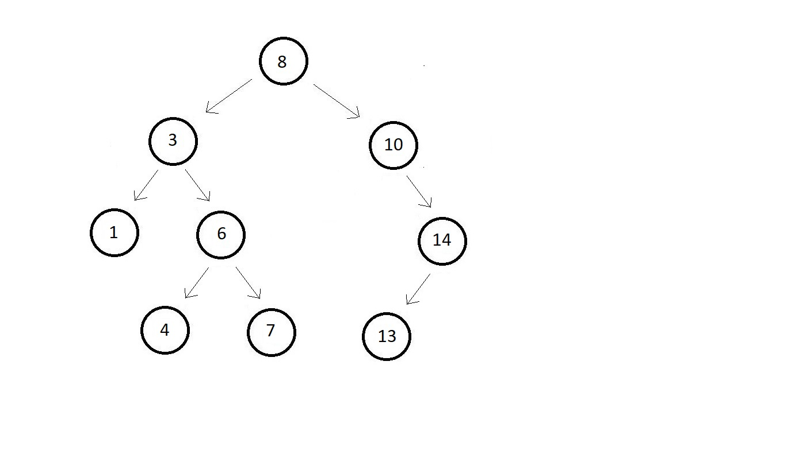
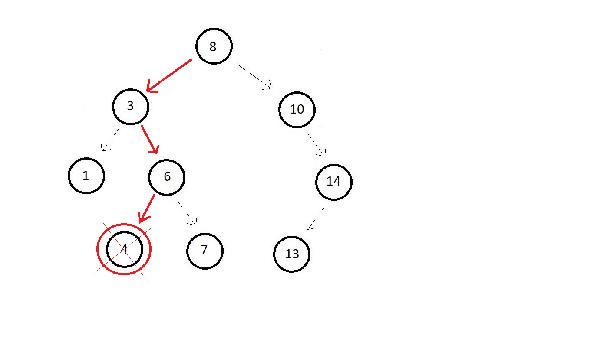

Here is an example binary search tree, and the element we want to insert is 9.

This was one simple case, but things becomes more complex when you have to insert your element at some internal position and not at the leaf.
void insert(struct node *root, int key){
struct node *prev = NULL;
while(root!=NULL){
prev = root;
if(key==root->data){
printf("Cannot insert %d, already in BST", key);
return;
}
else if(key<root->data){
root = root->left;
}
else{
root = root->right;
}
}
struct node* new = createNode(key);
if(key<prev->data){
prev->left = new;
}
else{
prev->right = new;
}
}
#include<stdio.h>
#include<malloc.h>
struct node{
int data;
struct node* left;
struct node* right;
};
struct node* createNode(int data){
struct node *n; // creating a node pointer
n = (struct node *) malloc(sizeof(struct node)); // Allocating memory in the heap
n->data = data; // Setting the data
n->left = NULL; // Setting the left and right children to NULL
n->right = NULL; // Setting the left and right children to NULL
return n; // Finally returning the created node
}
void insert(struct node *root, int key){
struct node *prev = NULL;
while(root!=NULL){
prev = root;
if(key==root->data){
printf("Cannot insert %d, already in BST", key);
return;
}
else if(key<root->data){
root = root->left;
}
else{
root = root->right;
}
}
struct node* new = createNode(key);
if(key<prev->data){
prev->left = new;
}
else{
prev->right = new;
}
}
int main(){
// Constructing the root node - Using Function (Recommended)
struct node *p = createNode(5);
struct node *p1 = createNode(3);
struct node *p2 = createNode(6);
struct node *p3 = createNode(1);
struct node *p4 = createNode(4);
// Finally The tree looks like this:
// 5
// / \
// 3 6
// / \
// 1 4
// Linking the root node with left and right children
p->left = p1;
p->right = p2;
p1->left = p3;
p1->right = p4;
insert(p, 16);
printf("%d", p->right->right->data);
return 0;
}
In below example, where 4 is the element we wanted to remove and seems quite an easy job. Just search
for the element and remove it.

Bul deleting in a binary search tree is no doubt a tough job like if you consider a case where the
node is not a leaf node or it is a root node.
There are three cases when we have to delete a node from a binary search tree.
#include <stdio.h>
#include <stdlib.h>
struct node
{
int data;
struct node *left;
struct node *right;
};
struct node *createNode(int data)
{
struct node *n;
n = (struct node *)malloc(sizeof(struct node));
n->data = data;
n->left = NULL;
n->right = NULL;
return n;
}
void inOrder(struct node *root)
{
if (root != NULL)
{
inOrder(root->left);
printf("%d ", root->data);
inOrder(root->right);
}
}
struct node *inOrderPredecessor(struct node *root)
{
root = root->left;
while (root->right != NULL)
{
root = root->right;
}
return root;
}
struct node *deleteNode(struct node *root, int value)
{
struct node *iPre;
if (root == NULL)
{
return NULL;
}
if (root->left == NULL && root->right == NULL)
{
free(root);
return NULL;
}
// search for the node to be deleted
if (value < root->data)
{
root->left = deleteNode(root->left, value);
}
else if (value > root->data)
{
root->right = deleteNode(root->right, value);
}
// Deletion strategy when the node is found
else
{
iPre = inOrderPredecessor(root);
root->data = iPre->data;
root->left = deleteNode(root->left, iPre->data);
}
return root;
}
int main()
{
// constructing the root node - Using Function (Recommended)
struct node *p = createNode(5);
struct node *p1 = createNode(3);
struct node *p2 = createNode(6);
struct node *p3 = createNode(1);
struct node *p4 = createNode(4);
// 5
// / \
// 3 6
// / \
// 1 4
// Linkng the rootnode with left and right childre
p->left = p1;
p->right = p2;
p1->left = p3;
p1->right = p4;
inOrder(p);
printf("\n");
deleteNode(p, 5);
inOrder(p);
return 0;
}